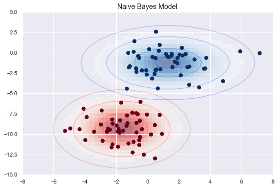

There are three kinds of naive Bayes classifiers implemented in scikit-learn: GaussianNB, BernoulliNB, and MultinomialNB. GaussianNB can be applied to any continuous data, while BernoulliNB assumes binary data and MultinomialNB assumes count data (that is, that each feature represents an integer count of something, like how often a word appears in a sentence). BernoulliNB and MultinomialNB are mostly used in text data classification.
In this classifier, the assumption is that data from each label is drawn from a simple Gaussian distribution. Imagine that you have the following data:
from sklearn.datasets import make_blobs
X, y = make_blobs(100, 2, centers=2, random_state=2, cluster_std=1.5)
plt.scatter(X[:, 0], X[:, 1], c=y, s=50, cmap='RdBu');
One extremely fast way to create a simple model is to assume that the data is described by a Gaussian distribution with no covariance between dimensions. This model can be fit by simply finding the mean and standard deviation of the points within each label, which is all you need to define such a distribution. The result of this naive Gaussian assumption is shown in the following figure:

Figure7.3.2.The result of the naive Gaussian assumption
The ellipses here represent the Gaussian generative model for each label, with larger probability toward the center of the ellipses. With this generative model in place for each class, we have a simple recipe to compute the likelihood \(P(x_{i}\mid C_{k})\) for any data point, and thus we can quickly compute the posterior and determine which label is the most probable for a given point.
A nice piece of this Bayesian formalism is that it naturally allows for probabilistic classification, which we can compute using the predict_proba method():
The columns give the posterior probabilities of the first and second label, respectively. If you are looking for estimates of uncertainty in your classification, Bayesian approaches like this can be a useful approach.
Of course, the final classification will only be as good as the model assumptions that lead to it, which is why Gaussian naive Bayes often does not produce very good results. Still, in many cases—especially as the number of features becomes large—this assumption is not detrimental enough to prevent Gaussian naive Bayes from being a useful method.
In this classifier, we model the data distribution with a best-fit multinomial distribution. One place where multinomial naive Bayes is often used is in text classification, where the features are related to word counts or frequencies within the documents to be classified. Here we will use the sparse word count features from the 20 Newsgroups corpus to show how we might classify these short documents into categories.
Let’s download the data and take a look at the target names:
from sklearn.datasets import fetch_20newsgroups
data = fetch_20newsgroups()
# We'll print 1-by-1 here to keep a reasonable line width
for name in data.target_names:
print(name)
From: dmcgee@uluhe.soest.hawaii.edu (Don McGee)
Subject: Federal Hearing
Originator: dmcgee@uluhe
Organization: School of Ocean and Earth Science and Technology
Distribution: usa
Lines: 10
Fact or rumor....? Madalyn Murray O'Hare an atheist who eliminated the
use of the bible reading and prayer in public schools 15 years ago is now
going to appear before the FCC with a petition to stop the reading of the
Gospel on the airways of America. And she is also campaigning to remove
Christmas programs, songs, etc from the public schools. If it is true
then mail to Federal Communications Commission 1919 H Street Washington DC
20054 expressing your opposition to her request. Reference Petition number
2493.
In order to use this data for machine learning, we need to be able to convert the content of each string into a vector of numbers. For this we will use the CountVectorizer in the module sklearn.feature_extraction.text. Count vectorizer converts a collection of text documents to a matrix of token counts. For example,
from sklearn.feature_extraction.text import CountVectorizer
corpus = [
'This is the first document.',
'This document is the second document.',
'And this is the third one.',
'Is this the first document?',
]
vectorizer = CountVectorizer()
X = vectorizer.fit_transform(corpus)
The code above converts the corpus to matrix of some features. To know what the features are, run the code below:
There are some issues with this approach, however: the raw word counts lead to features which put too much weight on words that appear very frequently, and this can be sub-optimal in some classification algorithms. One approach to fix this is known as term frequency-inverse document frequency (TF–IDF) which weights the word counts by a measure of how often they appear in the documents. The module sklearn.feature_extraction.text has this built-in utility TfidfVectorizer. You will use it in the lab assignment of next week. For now, let’s keep using the simple one. The next step is to create a pipeline that attaches CountVectorizer to a multinomial naive Bayes classifier:
from sklearn.feature_extraction.text import CountVectorizer
from sklearn.naive_bayes import MultinomialNB
from sklearn.pipeline import make_pipeline
model = make_pipeline(CountVectorizer(), MultinomialNB())
Now that we have predicted the labels for the test data, we can evaluate them to learn about the performance of the estimator. For example, here is the confusion matrix between the true and predicted labels for the test data:
from sklearn.metrics import confusion_matrix
mat = confusion_matrix(test.target, labels)
sns.heatmap(mat, square=True, annot=True, fmt='d', cbar=False,cmap="YlGnBu",
xticklabels=train.target_names, yticklabels=train.target_names)
plt.xlabel('Predicted label')
plt.ylabel('Actual label')
plt.show()
Evidently, even this very simple classifier can successfully separate space talk from computer talk, but it gets confused between talk about religion and talk about Christianity. This is perhaps an expected area of confusion!
In this classifier, we model the data distribution with a Bernoulli distribution. The syntax is similar to Multinomial Naive Bayes, so we will skip the details.
GaussianNB can be applied to any continuous data, while BernoulliNB assumes binary data and MultinomialNB assumes count data. BernoulliNB and MultinomialNB are mostly used in text data classification. MultinomialNB and BernoulliNB have a single parameter, alpha, which controls model complexity. A large alpha means more smoothing, resulting in less complex models. The algorithm’s performance is relatively robust to the setting of alpha, meaning that setting alpha is not critical for good performance. However, tuning it usually improves accuracy somewhat. GaussianNB is mostly used on very high-dimensional data, while the other two variants of naive Bayes are widely used for sparse count data such as text. MultinomialNB usually performs better than BernoulliNB, particularly on datasets with a relatively large number of nonzero features (i.e., large documents). Naive Bayes models are great baseline models and are often used on very large datasets, where training even a linear model might take too long.